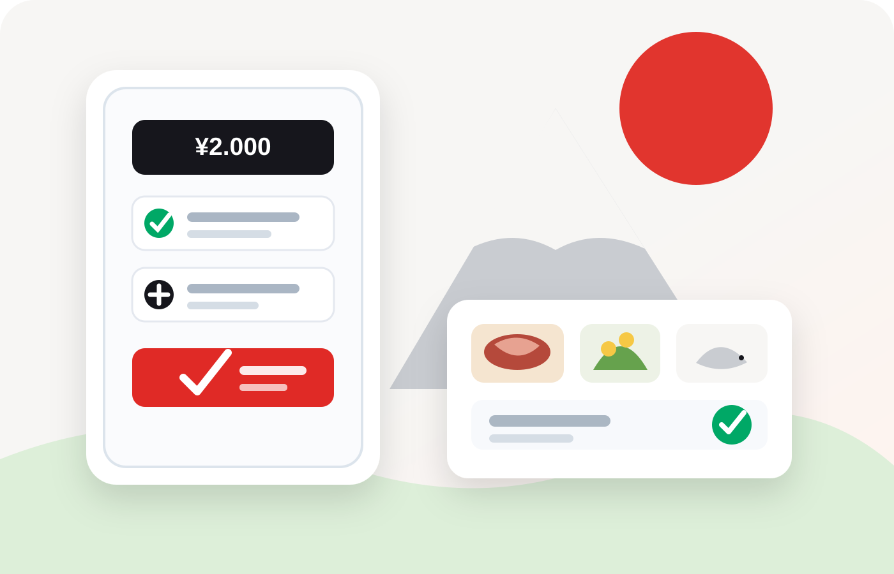
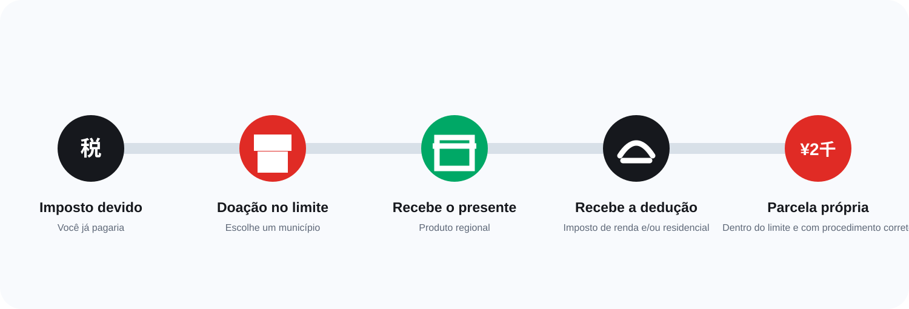
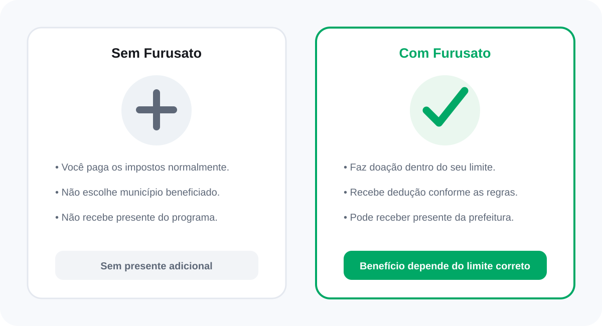

Impostos
Furusato Nozei vale a pena?
Para muita gente, sim — mas só quando a doação fica dentro do limite e o procedimento fiscal é concluído corretamente.

Resposta rápida
O Furusato Nozei pode valer bastante a pena para quem já paga imposto no Japão, calcula corretamente o limite e conclui o One-Stop ou a declaração. Dentro dessas condições, a parcela que fica fora da dedução costuma ser de ¥2.000 no conjunto das doações elegíveis do ano — não é dinheiro grátis, é uma doação com benefício fiscal e possível presente da prefeitura.
Quando costuma compensar?
A resposta depende menos do presente e mais da sua situação tributária.
Costuma valer a pena quando...
- Você paga imposto de renda e/ou imposto residencial no Japão.
- Calcula uma margem segura e não ultrapassa seu limite.
- Escolhe presentes que realmente usaria ou compraria.
- Conclui corretamente o One-Stop ou inclui tudo na declaração.
- Guarda os comprovantes e confere a dedução depois.
Pode não compensar quando...
- Sua renda tributável ou imposto devido é muito baixo.
- Você doa com base em uma estimativa exagerada.
- Ultrapassa o limite e transforma parte da doação em custo próprio.
- Perde o prazo ou esquece o procedimento fiscal.
- Escolhe itens de que não precisa só pelo valor aparente.
A jornada dos ¥2.000
O benefício só fecha dessa forma quando a doação está dentro do limite e o procedimento está correto.

A dedução não é necessariamente recebida como um único pagamento em dinheiro — pode aparecer entre imposto de renda e imposto residencial, conforme o procedimento usado.
Quatro fatores decidem se vale a pena
Não existe um valor universal que sirva para todo mundo.
Renda e impostos
O limite depende da renda tributável, deduções, dependentes e outros fatores.

Limite seguro
Doar abaixo de uma estimativa prudente reduz o risco de pagar mais do próprio bolso.
Procedimento correto
One-Stop ou declaração precisam incluir todas as doações aplicáveis.
Utilidade do presente
Carne, arroz, frutas e itens domésticos só têm valor se fizerem sentido para você.
Exemplo ilustrativo
Um jeito simples de ver como o cálculo costuma funcionar na prática.
Exemplo ilustrativo
Trabalhador assalariado com limite estimado de ¥65.000.
Exemplo simplificado. O limite real não pode ser definido apenas pelo salário bruto, e a dedução depende do caso fiscal individual e do procedimento correto.
¥2.000 não significa que qualquer doação compensa
Veja como a mesma doação pode ter resultados diferentes.
| Situação | Doação | Resultado provável | Custo real |
|---|---|---|---|
| Dentro do limite e procedimento correto | ¥50.000 | Até ¥48.000 considerados na dedução | Em torno de ¥2.000 |
| Limite pessoal de ¥30.000, mas doação de ¥50.000 | ¥50.000 | Parte pode ficar fora da dedução | Mais de ¥2.000 |
| Dentro do limite, mas sem One-Stop nem declaração | ¥50.000 | Dedução pode não ser aplicada | Pode chegar ao valor integral |
| Renda ou imposto muito baixo | ¥50.000 | Capacidade de dedução reduzida | Pode ser bem maior |
A tabela é educativa e não constitui cálculo fiscal individual.
Fazer ou não fazer?
Você não deixa de pagar imposto apenas por não usar o sistema.

Erros que acabam com a vantagem
O maior risco não está no presente: está no cálculo e no procedimento.
Ultrapassar o limite
A parte excedente pode não ser compensada e vira gasto adicional.
Esquecer o One-Stop
Sem pedido válido ou declaração, a dedução pode não aparecer.
Declarar e esquecer as doações
Ao fazer declaração, o One-Stop perde a validade; todas as doações precisam entrar nela.
Usar salário bruto como única referência
Dependentes, despesas médicas, financiamento e outras deduções alteram o limite.
Contar com valor de revenda
Presentes são para uso; valor percebido e preço de mercado variam.
Doar por impulso em dezembro
Pressa aumenta erros de limite, endereço, documentos e prazo.
Então, vale a pena?
Sim, geralmente vale para quem tem imposto suficiente, fica dentro do limite e conclui o procedimento. A vantagem prática é direcionar parte do valor para municípios escolhidos e, quando oferecido, receber presentes regionais.
Mas o Furusato Nozei não deve ser tratado como investimento, cashback garantido ou compra comum. A doação é feita primeiro; a dedução fiscal vem depois e depende das regras aplicáveis.
Perguntas frequentes
Os ¥2.000 são por cidade?
Estrangeiro também pode fazer?
Quem ganha pouco deve fazer?
É melhor doar o máximo possível?
O presente é realmente gratuito?
Como sei se a dedução deu certo?
Fontes consultadas
- Agência Nacional de Impostos do Japão (国税庁) — explicação do Furusato Nozei e dedução da parcela que excede ¥2.000.
- Agência Nacional de Impostos do Japão — regras do One-Stop e perda da validade quando há declaração.
- Ministério de Assuntos Internos e Comunicações (総務省) — portal oficial do Furusato Nozei e simulação de limite.
Conteúdo informativo e educativo. Limites, deduções e procedimentos dependem da situação individual e podem mudar. Confirme sempre as informações oficiais antes de tomar decisões.
Descubra se vale a pena no seu caso
Comece pelo limite. Depois escolha a plataforma e faça o procedimento fiscal correto.